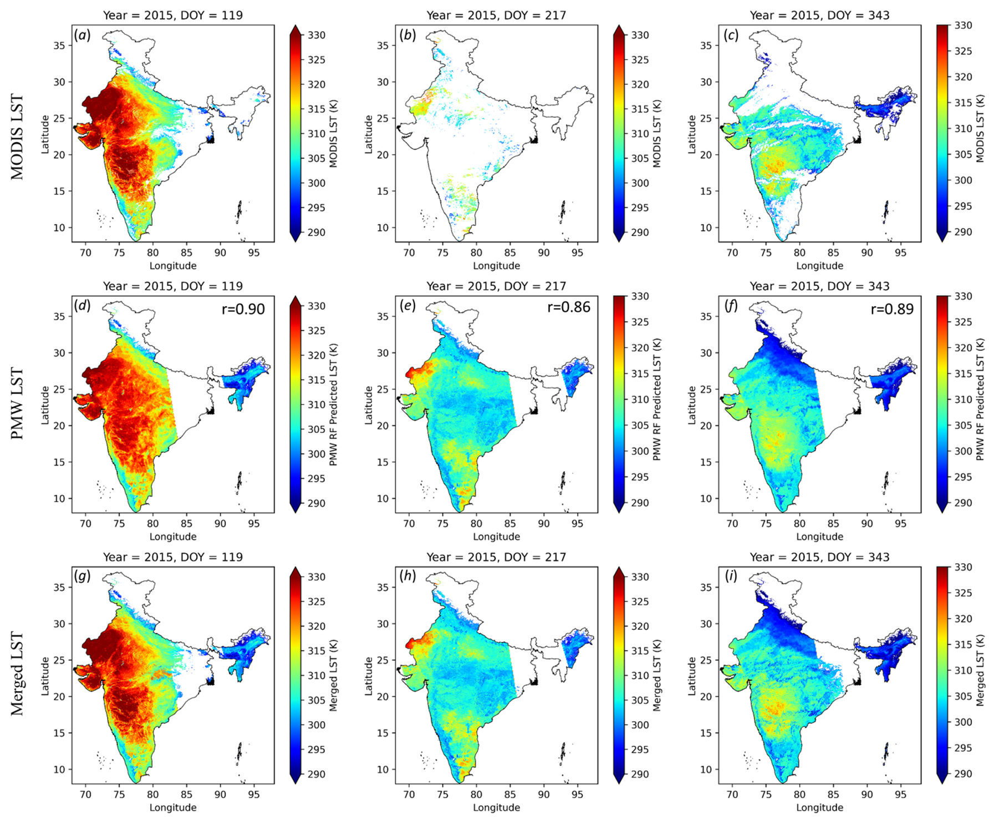
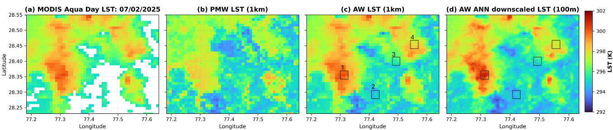
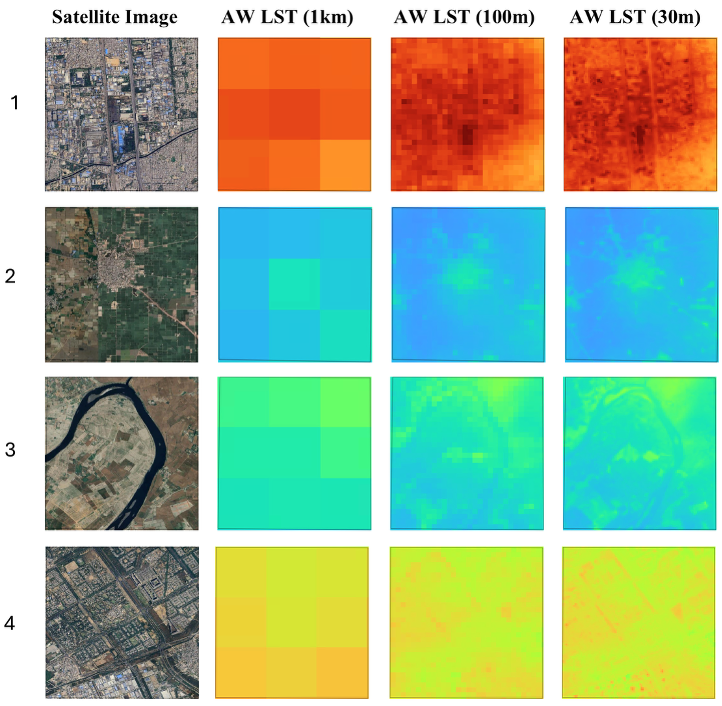

Research Interests
Ph.D. Research
Thesis Title
All-Weather High Spatiotemporal Resolution Land Surface Temperature Development Over India
Supervisor: Prof. Eswar Rajasekaran | IIT Bombay | Awarded: February 2026
Motivation
Thermal infrared satellite observations for Land Surface Temperature (LST) are limited by two fundamental challenges: cloud cover obscures nearly 60% of Earth's surface — extending to weeks or months over India during monsoon — and an inherent trade-off exists between spatial and temporal resolution across satellite platforms. My Ph.D. research systematically addresses both challenges through four interlinked objectives.
Research Objectives
Emissivity & Retrieval Algorithm Evaluation
Systematic evaluation of VI-based emissivity models (NDVI, EVI, NDWI) and LST retrieval algorithms (SMWA, GSCA) for Landsat data over India. The SMWA achieved best accuracy (RMSE: 1.70 K) outperforming operational Landsat Level-2 products (RMSE: 3.52 K).
All-Weather LST via Passive Microwave Integration
A Random Forest framework integrating AMSR2 passive microwave brightness temperatures reconstructs cloud-obscured LST gaps. Validated at 12 sites across India, the model increases valid LST observations by ~67%, producing a seamless 1 km daily all-weather LST product.
Spatial Downscaling to 100 m
Novel ML/deep learning models (RF, XGBoost, ANN, ResNet18, ResNet50) trained using ECOSTRESS and Landsat–Sentinel-2 data downscale MODIS LST from 1 km to 100 m. Separate models for each MODIS overpass time achieve RMSEs of 1.07–1.97 K and R² of 0.95–0.97.
Evapotranspiration Estimation
Integration of all-weather LST into the SPARSE surface energy balance model validated at 7 eddy covariance sites across India. Monthly ET estimation improved by ~27% over standard MODIS products, with gap-filled products providing 53–56% more valid observations.
Selected Results



Current Research at Sagri Co. Ltd.
Carbon Credit Estimation & GHG Accounting
At Sagri Co. Ltd., I am contributing to R&D on carbon credit estimation through agricultural practices, including soil organic carbon (SOC) dynamics, dead organic matter decomposition modelling using YASSO20, and RothC forward simulations under different farming scenarios. This work involves production-level, end-to-end computational workflow development in Python.